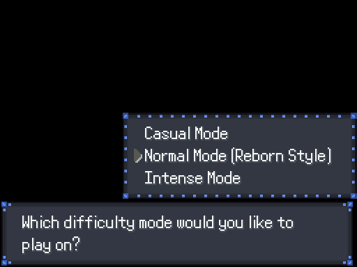

The game begins as a mother tells the story of the Zorua and the Pangoro to her child. You listen in as the story is told, and at the end of the story, the mother bids her child, Maria, goodnight.
Maria wakes up, and you will be able to explore the house through her eyes. When you go downstairs, Maria's mother will ask you to fetch Maria's father, who should be in his study. Feel free to explore the house, a lot of the objects including books, bookshelves, and computers are interactable. You can fetch Maria's father from the top left room, but the room below that is also explorable if you so choose to.
When you're done exploring, head into Maria's father's study and talk to him. You will then need to report her father's words back to her mother. Maria's mother will ask Maria to freshen up, so head upstairs. As you enter Maria's room, a strange aura washes over and you hear a loud crash from the bottom floor. No one answers as Maria calls for her mom.
Head back downstairs, and Maria will call for her mother a few more times. Instead, she faces a strange person in full armor. The strange person will ask you some questions, then direct Maria downstairs with choice parting words. Head downstairs, where you will find her father and mother. Watch the scene play out, as Maria's conciousness fades.
Maria will reappear in a different environment entirely, with a maid calling her Marianette. The maid tells Maria that her father wishes to see her. Despite Maria's attempt at correcting her name, it falls on deaf ears. There's not much exploration that can be done, so make your way over to the North Wing.
Enter the North Wing, and watch the scene play out.

As the scene ends, you will be prompted to select a difficulty level. Note that Pokemon Rejuvenation is more challenging than the main series games. You will be able to change the difficulty level later, but only once. With that in mind, select the difficulty you want.
Once you select the difficulty, you will be introduced to Amanda. Amanda will introduce herself to you as the scout for the Aevium league. She'll help you if you need help with controls, and give you the overview for the region. There are 18 gyms, one for each type, and an Elite Eight rather than an Elite Four. Pokemon Rejuvenation also imposes a strict level limit, so you won't be able to naturally overlevel your Pokemon. Any overleveled Pokemon will refuse to obey you.
With that out of the way, she'll set up your Trainer Card with you. Regardless of the gender options, you will be able to select any of the image profiles. Choose the profile you want, enter your name, and Amanda will welcome you to the Aevium Region.
Regarding Passwords: I don't recommend using any of these passwords for their first run, but for those interested here are the usable passwords.
Once you're done, the lady at the counter will hand you your Trainer Card, which will be verified at Gearen Immigration. Exit the room, and your mom will lead you to the entrance of the banquet hall, where the final dinner will be served before arriving at Gearen City. Your mom tells you to visit the Captain, Augustus, and leaves to finish some business. From here, you're free to explore the ship.
There's not much to do here, but there are a few interesting optional scenes to be played. There are scenes at the bottom right cabin door, and the middle left cabin door, but for the latter you will need to eavesdrop through the walls. The ends of the center part of the hallways also lead out to the deck, which you can explore. On the upper deck, accessible through the second floor, this lady will give you a Rare Candy. Like the main series game, this can be used to level up your Pokemon.
That's everything in terms of optional content, so once you're ready head all the ways upstairs and talk to Augustus. He'll repeat a lot of what Amanda already said, then he will head down to the banquet hall to start the feast. Follow him down, and meet your mom in front of the banquet hall. Once inside, you can take your time to talk to the attendees, and talk to your mother once you're ready.
As Augustus takes the stage to speak a few words, a group of uniformed people enters the banquet hall. They say they are here to pick someone up, and your mom yells at the black-haired woman to get you away. As Gothitelle teleports you away, you hear the sounds of explosions.
You'll appear in Augustus' room, all the way on top. You'll find that the ship is infested by weird tentacle-like tendrils. You can't really explore much, so make your way back downstairs. Head into the banquet hall to talk with Augustus, then head all the way down to check the situation at the door. Then head back up and talk to the person blocking the stairs. He'll be kidnapped by a Deoxys, so head down to the hold and meet up with your mother.
As you reunite, a purple-haired woman will teleport in. As the situation becomes dire, a piano drops in from above, courtesy of PIANOLADY. You make a run for it, but on deck you are surrounded by an old man and the purple-haired woman from earlier. Right as you are about to be taken, a Talonflame swoops in and flies you away. The two remaining people cut their losses, and so ends the Prologue.